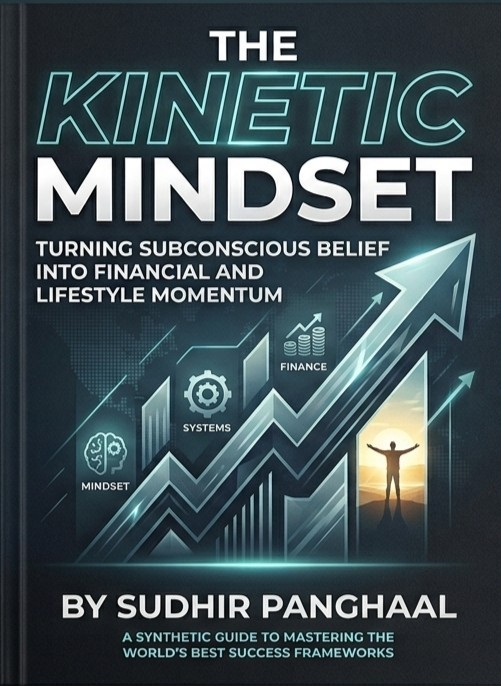
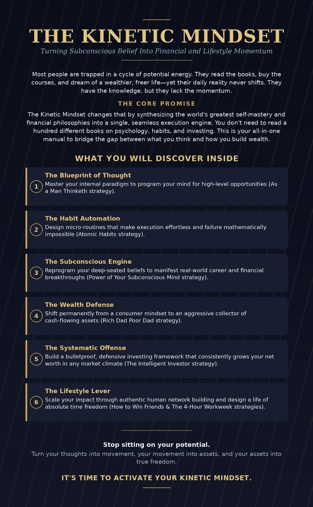

The Kinetic
Mindset
Turning Subconscious Belief Into Financial and Lifestyle Momentum.

MOVE
BUILD
Stop sitting on your potential.
The Kinetic Mindset treats thought, habits, emotion, money, relationships and action as connected systems. The goal is not motivation for a day — it is momentum you can keep.
Blueprint of Thought
See the internal architecture behind repeated choices.
02 · THE FOUNDATIONHabit Automation
Turn useful behaviour into a system that needs less negotiation.
03 · THE ENGINESubconscious Engine
Understand the patterns quietly steering your outcomes.
04 · THE DEFENSEWealth Defense
Protect what you build before chasing what is next.
05 · THE OFFENSESystematic Offense
Convert capital, attention and decisions into deliberate action.
06 · THE LEVERLifestyle Lever
Use relationships and environment as forces that shape momentum.
A book you can work with.
Read the chapters, test the ideas and use the tools. This site is designed as a companion to the book — a place to move from insight into action.

Ten chapters. One direction.
Move through the system in order, or jump directly to the chapter that matches the problem you are solving.
Don't just read it. Run it.
The Decision Room
Work through a decision using multiple lenses and archive your thinking locally.
TOOL 02Find Your Kinetic Type
Use the interactive quiz to explore the patterns that shape your momentum.
TOOL 03Nine-System Diagnostic
Inspect the connected systems that may be helping or blocking progress.
TOOL 04Reader's Toolkit
Turn the ideas in the book into repeatable exercises and prompts.
KINETIC ROOM
Reduce noise. Identify the one move that matters. Then act.
Go deeper into the system.
Explore the book, chapter map, decision tools, diagnostic systems, and the lines worth returning to.
Insight is useful when it becomes movement.
Return to the chapters, use the tools, and keep the next clear action visible.